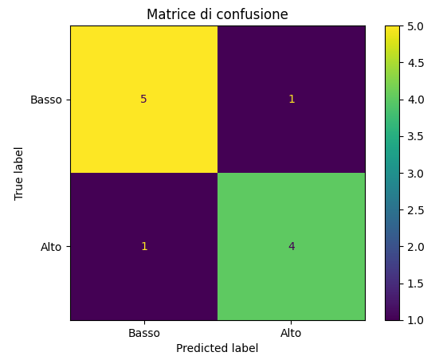
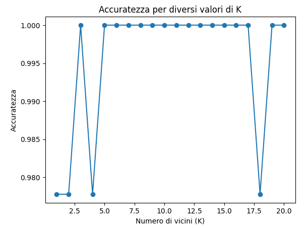

In questa pagina sono presentati due progetti realizzati con Google Colab, una piattaforma online che permette di scrivere ed eseguire codice Python direttamente nel browser. I progetti utilizzano dataset reali per analizzare i dati e costruire modelli di machine learning, come la regressione e la classificazione, in modo semplice e interattivo.
Car Crashes dataset
Questo progetto applica la regressione lineare per prevedere il numero totale di incidenti stradali a partire da variabili come eccesso di velocità, alcol, distrazione e assenza di precedenti. Il dataset utilizzato, Car Crashes, fornisce statistiche utili su incidenti automobilistici negli USA. Dopo aver selezionato le feature rilevanti, i dati vengono standardizzati e suddivisi in training e test set. Il modello viene addestrato e valutato tramite l’errore quadratico medio (MSE). Infine, viene calcolata e visualizzata una matrice di confusione classificando i risultati come “Alto” o “Basso”.
 Visualizza progettoIris dataset
Questo progetto usa il dataset Iris per creare un modello che riconosce il tipo di fiore usando l’algoritmo K-Nearest Neighbors (KNN). Dopo aver importato le librerie e caricato i dati, si analizzano e si dividono in dati per l’addestramento e per il test. I dati vengono normalizzati per migliorare i risultati. Il modello KNN (con k=5) viene allenato e testato calcolando l’accuratezza e la matrice di confusione. Infine, si prova a cambiare il valore di k per vedere come cambia la precisione del modello.
 Visualizza progetto